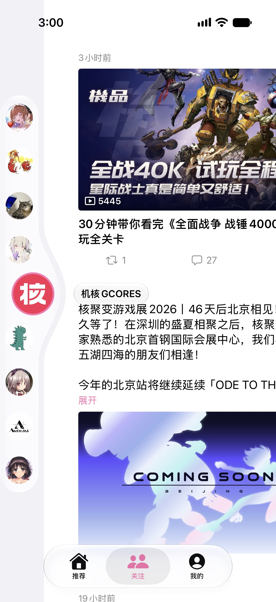
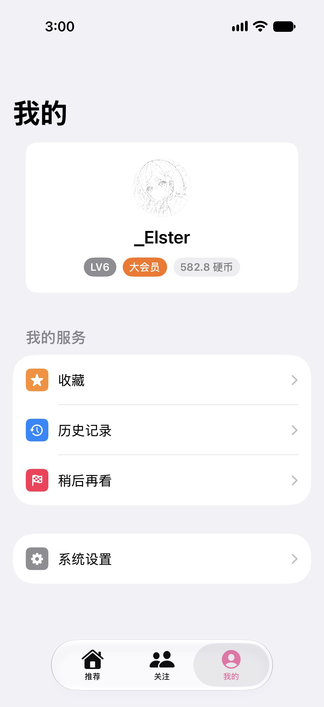

好内容，顺手就找到。
浏览推荐，也可以直接搜索。遇到想看的视频，加入稍后再看，把期待留给有空的时候。
推荐 · 搜索 · 稍后再看为 iPhone 而生的 B 站客户端
发现让你停留的内容，关注让你期待的更新。
用熟悉的 iOS 方式，打开你的 B 站日常。


熟悉的内容，新的体验
从随手刷到的一条推荐，到一直关注的 UP 主。
把发现、关注与观看，放进一个轻巧的日常。
浏览推荐，也可以直接搜索。遇到想看的视频，加入稍后再看，把期待留给有空的时候。
推荐 · 搜索 · 稍后再看在关注动态中跟上 UP 主的更新，也能走进他们的个人空间，看看最近又分享了什么。
关注动态 · UP 主空间用顺手的播放控制调整进度与清晰度。看完再逛逛评论，把喜欢的内容收藏起来。
视频播放 · 评论 · 收藏下一次打开 B 站，换个方式。
NeoBili，准备好陪你看下一条。
下载未签名 IPA当前提供未签名 IPA，安装前需要使用自己的证书签名。
查看版本说明与校验文件